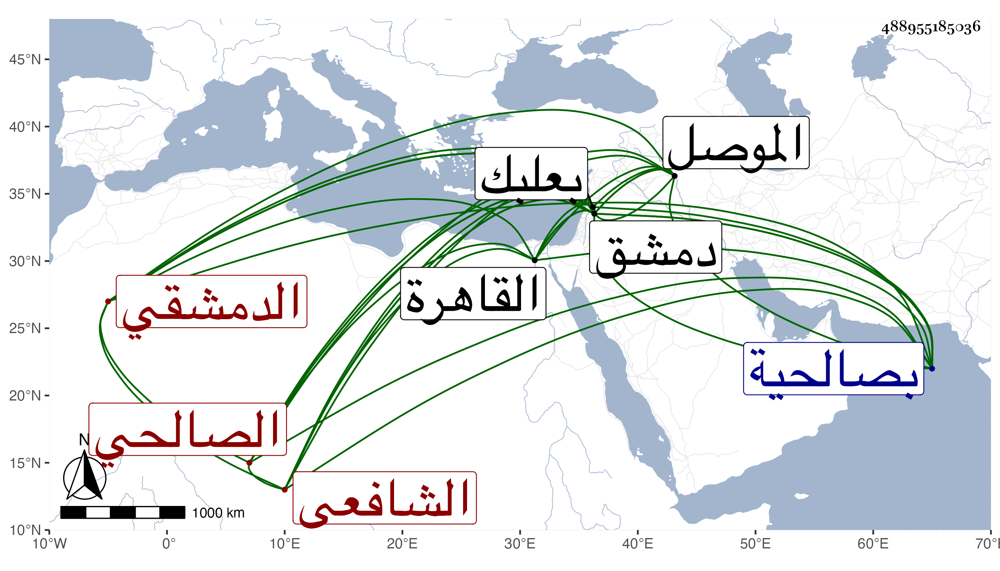

0902Sakhawi.DawLamic.ITO20230111-ara1.EIS1600.488955185036
Biography ID: 488955185036
إبراهيم بن محمد بن إبراهيم بن الشرف محمد بن علي بن الشرف محمد بن إبراهيم بن الشرف يعقوب بن الأمين أبي إسحاق إبراهيم بن موسى بن يعقوب بن يوسف البرهان بن القاضي شمس الدين الدمشقي الصالحي الشافعي أحد نوابهم وحفيد ست القضاة ابنة ابن زريق ويعرف كسلفه بابن المعتمد قريب سارة الآتية في النساء فهي عمة والده كان جده الأعلى الأمير مبارز الدين أبو إسحاق إبراهيم والي دمشق مولده بالموصل وينسب عادليا ويوصف بالمعتمد . مات في سنة ثلاث وعشرين وستمائة عن ثمانين سنة . ذكره الذهبي في تاريخ الإسلام وابنه الشرف أبو يوسف يعقوب كان حنفيا يعرف بابن المعتمد روى عن حنبل الرصافي وغيره وعنه جماعة منهم الدمياطي وأورد عنه في معجمه حديثا وأرخ مولده في رابع رمضان سنة سبع وثمانين وخمسمائة ومات في ثالث عشر رجب سنة سبعين وستمائة عن ثلاث وثمانين وذكره الذهبي أيضا وحفيده الشرف محمد بن إبراهيم يروي عن الفخر بن البخاري ومات في ربيع الأول سنة اثنتين وأربعين وسبعمائة ووالد صاحب الترجمة مات في سنة ثلاث وسبعين وثمانمائة عن تسع وخمسين كما سيأتي وجده الشرف الأعلى من ذرية ست الحسب ابنة ست الحسن ابنة قاضي القضاة البهاء بن الزكي . وأما هذا فولد في ثالث عشر ذي القعدة سنة ثلاث وأربعين وثمانمائة بصالحية دمشق ونشأ بها فحفظ القرآن وقام به على العادة في رمضان سنة أربع وخمسين والمنهاج وألفية النحو وألفية البرماوي في الأصول والخزرجية في العروض وتفقه بالبدر بن قاضي شهبة والنجم بن قاضي عجلون ولازمهما حتى أخذ عن أولها ربع العبادات من شرحه الكبير على المنهاج والربع الأخير من شرحه الصغير عليه ومن أول النكاح إلى أثناء الجراح من تعقباته على المهمات المسمى بالمسائل المعلمات باعتراضات المهمات وعن ثانيهما من تصانيفه هادي الراغبين إلى منهاج الطالبين والتاج بزوائد الروضة على المنهاج بل أخذ عنه أصول الفقه والعروض والنحو كألفية البرماوي والخزرجية والكثير من شرح الألفية لابن الناظم والنحو أيضا عن الشهاب الزرعي والفرائض والحساب على الشمس بن حامد الصفدي وأذن له بالإفتاء فيها في شوال سنة أربع وستين وكتب بالشامية وأنهى بها في التي تليها بل أذن له فيها البدر بن قاضي شهبة بالإفتاء إذنا عاما وناب في القضاء في رجب سنة إحدى وسبعين وهلم جرا ودرس بالظاهرية الجوانية وبالعذراوية برغبة المحب بن قاضي عجلون له عنهما وبالمجاهدية الجوانية عن الزين عمر بن محمد الطرابلسي فقيه بعلبك المتلقي لها عن رغبة البدر بن قاضي شهبة برغبته له والنصف من إفتاء دار العدل وجمع تدريس الركنية والفلكية برغبة التقي بن قاضي عجلون له عنها والتصدير بمدرسة أبي عمر وبالجامع وحج وكتب على العجالة حاشية في ثلاث مجلدات وأشياء مفرقة من تاريخ وغيره بل له نظم وكتب المنسوب وسمع معنا بدمشق في سنة تسع وخمسين على جدته والشهابين ابن الشحام وابن الزين عمر بن عبد الهادي والشمس أبو خوارش وروفع فيه فقدم القاهرة في سنة خمس وتسعين فدام في الترسيم مدة وتوجعنا له وزارني في ربيع الأول من التي بعدها ثم أوقفني على مجلد من كتابته وأنشدني من نظمه مما كتب على قبر والده :
| يا ربنا يا من له | نعم غزار لا تعد |
| يا من يرجى فضله | يا من هو الفرد الصمد |
| اغفر لساكن ذا الضري | ح محمد المعتمد |
وكل منه والشهاب بن اللبودي متزوج بأخت الآخر فذاك ماتت زوجته معه وهذا استمرت تحته إلى الآن واستجازني لنفسه ولبنيه .
